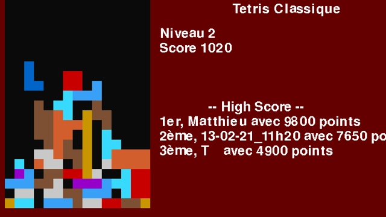

Jeu de blocs
Tetris

Terminé
Langue :

Début du projet :
01/02/2021
Fin du projet :
12/02/2021
Langages
R Python
Equipe
Matthieu FARANDJIS
Yassine O.
Plus sur le projet
Présentation
Après avoir commencé à apprendre le module Python "Pygame", nous devions recréer Tetris.
Le moteur graphique avait été déjà fait, nous devions créer les blocs, associer les touches,
faire les déplacements.
Nous pouvions ajouter des fonctionnalités bonus en plus de ce qui était demandé, ce que j'ai fait bien sûr.
C'était un projet très intéressant !
Tetris est l'un de mes jeux favoris avec Pokémon et Sonic, c'était un plaisir de découvrir le sujet.
Vu que je connaissais le jeu, je connaissais ses mécaniques, il était facile pour moi d'imaginer la conception du jeu.
Malheureusement, ce n'était pas le cas de tous mes camarades.
Tetris est un jeu de casse-tête, il demande une certaine logique.
Il faut que les blocs descendent d'eux même, se figent dans la grille, prennent en compte les collisions...
Même si Tetris paraît très simpliste par rapport à un jeu comme The Legend of Zelda: Breath of the Wild, cela ne veut pas dire
qu'il n'est pas complexe !
Si j'avais des facilités, ce n'était pas le cas de mon camarade.
Apprendre pour reproduire ne lui posait aucun problème, mais devoir se projeter sur un programme lui était compliqué.
Il m'avait expliqué que lorsqu'on lui demandait de faire une fonction, il ne savait pas comment faire.
On n'a pas eu le choix concernant la composition du binôme, mais je trouve que travailler avec lui a été une très bonne expérience.
Je dirigeais et je m'occupais de la partie complexe du projet.
Je répartissais les tâches en fonction de ses capacités, je lui demandais ce qu'il aimerait faire.
S'il rencontrait des difficultés, on y réfléchissait ensemble.
Je lui expliquais bien sur ce que je faisais en parallèle.
Si j'ai trouvé cette expérience très intéressante, c'est parce que lui expliquer m'a permis de mieux comprendre ce que je faisais.
Cela me permettait de prendre du recul. Et ses questions me permettaient de mieux cerner l'enjeu du projet.
Et par rapport à d'autres fois avec d'autres camarades, lui était impliqué dans le projet.
Je pense que ce projet a été très enrichissant que ce soit de mon côté, ou du sien.
Je préfère être avec des personnes avec un niveau similaire par rapport au mien, mais parfois, c'est intéressant
de faire le contraire. Et ce projet est un exemple.
Note obtenu : 20/20
Fonctionnalités en plus
En plus de ce qui était demandé, nous avons ajouté les fonctionnalités suivantes :
blocs colorés
bloc 1x1
Tableau des scores
Système de sauvegarde des scores
Mode "Tetris Hermine"
Mode "Tetris Hermine"
Mister Flech est l'un de mes vidéastes favoris. Sur sa chaîne, il parle de jeux vidéo.
Dans certaines de ses émissions comme Reset System, il est accompagné d'Hermine,
une chienne geek qui est la mascotte de sa chaîne.
Dans son Reset System sur le jeu Tetris, un certain abonné (fictif) du nom de "Asgold" aurait créé
plein de petit jeu issu de Tetris. Dont Tetris Hermine.
Le jeu n'existant pas, j'ai essayé de l'intégrer au sein de notre projet Tetris.
C'est donc le mode 2 joueurs du projet.
L'un contrôle Hermine, et l'autre les blocs.
L'un doit chercher à emmêler l'autre pour qu'il perde, et l'autre doit l'éliminer pour gagner.
Et puis... Pourquoi pas un 3ᵉ joueur pour aider Hermine, aussi !
RESET SYSTEM #21 - Tetris (Mister Flech) : https://youtu.be/IV9it6tEpbM?t=964
Site internet de Mister Flech : https://misterflech.fr/
Hermine est un personnage fictif sous la propriété intellectuelle de Mister Flech.
Le mode Tetris Hermine est une création d'un fan.
Mode d'emploi et règles
MODE TETRIS NORMAL :
Des blocs aléatoires descendent et l'objectif est de faire des lignes complètes de tetrominos.
On gagne 10 points si on arrive à placer un bloc, 100 points si on arrive à supprimer une ligne.
En revanche, si le jeu n'arrive plus à placer de nouveau tetromino, votre parti se termine.
Votre défi est donc de faire un maximum de point sans jamais atteindre le sommet !
Sachant que plus votre niveau augmente, plus le jeu va vite. Une limite de vitesse est mise à partir du niveau 7.
Touches:
Espace : fait tourner le tetromino.
Flèche Gauche (←) : déplace le tetromino à gauche.
Flèche Droite (→) : déplace le tetromino à droite.
Flèche Bas (↓) : déplace le tetromino en bas.
Flèche Haut (↑) : mets en pause le jeu.
MODE TETRIS HERMINE :
Joueur 1 : joue à Tetris normalement et doit éliminer Hermine.
Joueur 2 : contrôle Hermine, et dois essayer de survivre et de faire perdre le joueur 1 pour gagner.
Le joueur 2 incarne Hermine (représenté par de 2 blocs de couleur vert clair).
Son objectif est de ne pas se faire éliminer.
Hermine peut se déplacer de gauche à droite, descendre ou monter de seulement un bloc.
Elle peut donc se faire bloquer !
Dès que le joueur 1 pose son tetromino, le jeu considéra Hermine comme un tetromino à part entière durant un instant.
Durant ce laps de temps, le jeu va analyser s'il peut supprimer une ligne.
Si oui, et qu'Hermine est présente, Hermine meurt et le joueur 1 gagne.
En revanche, si Hermine résiste et que le joueur 1 perd avec un Game Over classique sur Tetris, Hermine gagne.
Les touches de déplacements des tetrominos reste les mêmes, tout comme la touche pause.
Contrôle d'Hermine :
Touche A (Q) : déplace Hermine vers la gauche.
Touche Z (W) : déplace Hermine vers la droite.
Remarque : il est possible que vous deviez utiliser les touches Q/W plutôt que A/Z.
Lancer le projet
Modules utilisés :
Tkinter
Pygame
Random
Copy
Time
Pour lancer le projet, importer puis exécuter le fichier jeu_eleves.py.
Le projet a été créé avec l'IDE Spyder (Ananconda).
Si vous n'avez pas de programme pour lancer le projet Python, vous pouvez installer l'IDE EduPython.
Je recommande EduPython si vous souhaitez tester le projet sans vous embêter avec l'installation des modules ou de Python.
Sur EduPython:
Importer : Fichier > Ouvrir > jeu_eleves.py
Lancer le jeu : Exécuter > Exécuter (Ctrl + F9)
Arrêter le jeu : Exécuter > Stopper le debuggage (Ctrl + Alt + F9)
Les modules sont déjà présents au sein d'EduPython.
Note : Le projet semble ne plus correctement fonctionné sur Spyder étonnamment.